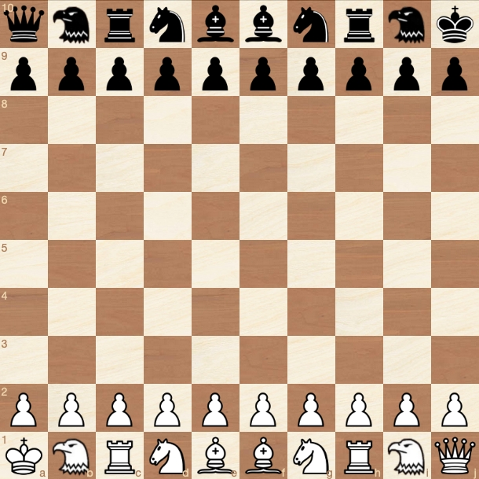

Saloon
Play an explosive chess variant that is closely related to classical chess and promotes razor sharp play ⚔.
Board
The board is extended to 100 (10x10) squares. The files are labeled with the letters a-j, the ranks with the numbers 1-10. The lower right square of the board is black.
Eagle
One non-random new piece is introduced. The eagle is basically a "big knight" and the logical next twin piece after bishop, knight and rook. It is complementary to these pieces. Means, it covers only squares that are not covered by them.
While the knight is a leaper that reaches all squares in a two square distance that cannot be reached by rook or bishop, the eagle has the same ability for the squares in a three square distance. The following diagram shows how it fits the picture:

Pawns
The pawns are modified as follows:
They can move up to three steps forward when placed the initial square.
Up to two steps forward when placed on the third, fourth or fifth rank.
One step forward when placed on the sixth rank or higher.
This means a pawn can reach the promotion field within five moves, which is the same number of moves as in classical chess:

En passant capturing is possible each time a pawn passes an enemy pawn by moving more than one square forward in one move:

Setup
The castling rule is replaced by the rule that kings and queens are placed in diametrical opposition at the corners of the board. The remaining pieces are shifted towards the center as shown in the following diagram:

Notes
Saloon incorporates the following design elements of classical chess:
- Two single pieces: The key piece and the strongest piece. The latter has the same move pattern as the key piece but with unlimited range.
- Three (four) pairs of twin pieces that are complementary to each other.
- Pieces with ambiguous routes to their destination squares (knight, eagle) can move directly to these squares regardless if one or all routes are blocked.
- Pawns get slower once they pass a certain rank number.
- All pieces can be developed by moving only the two central pawns.
- No unprotected pawns in the initial position.
- Its played on a square board.
Some estimations regarding the game dynamics:
Upvaluing the pawns by making them faster seemed necessary to keep the spirit of the original game that includes fast confrontation and a broad spectrum of possibilities for piece sacrifices.
The eagle might be about as valuable as a rook. Tests with the Fairy Stockfish engine suggest this as well.
It's a strong piece it but has also clear weaknesses. Along with its complementary character this makes it a very suitable alternative to the two pieces that are mostly used for a 10x board - the chancellor and the archhbishop.
10x10 should faciliate gambits and sacrifices in general, since one pawn unit represents a lower fraction of the complete material stock.
Chances for an asymmetrical material distribution - one of the most tension creating features in classsical chess - are increased as well.
The knight obviously suffers from longer routes on the bigger board, but controls on average more squares than in classical chess.
The king might be the only piece that is less powerful on the bigger board.
In classical chess the number of equally valued pieces consequently decreases with the piece value: Eight pawns, four pieces worth three pawns, two pieces worth five pawns, one piece worth nine pawns. The big board has four light pieces worth three (10x10) pawns but four heavy pieces worth five pawns as well.
Placing the kings in diametral opposition is a very natural alternative to the castling rule and provides its benefits - improved king safety and piece coordination - while creationg tension right from the start.
As in classical Chess, the start position offers a basic but flexible piece coordination that leaves multiple options to the players. The placement of the bishops allows a great variety of pawn structures.
As a mere view on the setup suggests, Saloon promotes a playing style that prefers energy over matter - and goes hand in hand with a much stronger focus on the king. The audience will like it üí•
History
Before developing a chess version for the 10x10 board, I experimented with a point symmetric setup for the 8x8 board. Engines can play this out of the box without reconfiguration. You still can find sample games on chess360.net.
The 8x8 version with the kings placed on h1 and a8 is described as Corner Chess or Kings Corner Chess on several websites.
The big board concept was developed by me and derived from first principles. However, most elements are (obviously) not new, only the combination is.
The concept of extending the b, n, r line with the next twin piece was used in
Falcon Chess, resulting in a 10x8 board, a non-leaping version of the eagle called falcon and a "r, n, b, f, q, k, f, b, n, r" setup.
In the fairy chess universe, the eagle is traditionally named bison and has apparently been used as early as 1974. However, the main problem here is that all pieces need a distinct initial for the game notation. "B" for bison would conflict with "B" for bishop.
"Bird" and "Kestrel" are choices that fail for the same reasons. "Falcon" was the initial choice of the author but is already used for the non-leaping version of the piece (see above).
The 3, 2, 1, 1, 1 pawn movement might be a completely new approach.
I originally tried to develop a "true" 10x10 version of classical chess named ChessXp which follows the same rules, but with the following castling rule and start position:


You can find the whole spec here:
https://www.chessvariants.com/rules/chessxp
Lawyers
Game rules, as abstract ideas or methods of organizing human activity, are generally not eligible for copyright protection or patents.* And chess is for the community anyway. So just for clarification:
Saloon is common heritage of mankind, as chess is. So use it as you want. But I don't complain if you give credit to the author 🗿
------------------------------
By
Ulrich Schwekendiek
Berlin
broulis@gmx.de
2019-2023
* However, copyright applies to a specific verbalization of the game rules, which is considered to be a literary work. So, if you use this paper without major modifications, you should put my name under it. Thank you ❤️